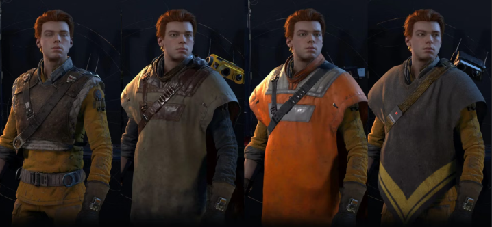
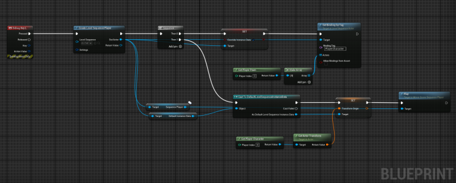
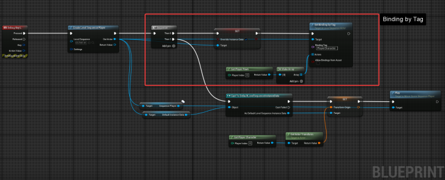
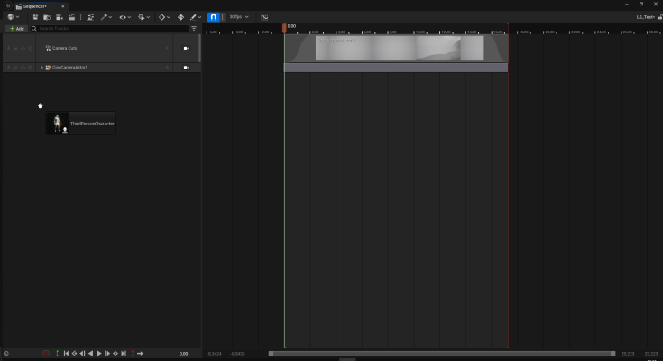
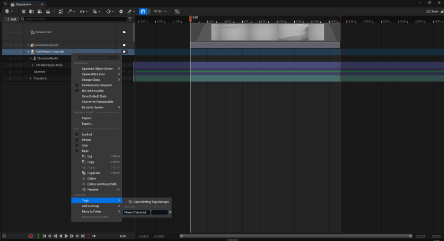

Some of the most convincing cinematic experiences preserve continuity: the character enters a scene wearing the same equipment, at the same location, and exits without a visible handoff. A common approach is to hide the gameplay character and substitute a cinematic copy. It can work, but it introduces synchronization work around appearance, inventory, transforms, animation, and restoration.
The goal

The alternative explored here is to let Sequencer temporarily control the existing gameplay actor. Two features make that approach practical: a dynamic transform origin and Sequencer binding tags.
Dynamic transform origin


A sequence authored at a fixed world location is difficult to reuse. A dynamic transform origin lets the sequence play relative to an actor or runtime location, so the cinematic content can follow the context in which it was triggered.
This is especially useful for interactions, finishers, conversations, or short transitions that may occur in more than one place.
Binding the current actor by tag


Add a binding tag—such as PlayerCharacter—to the relevant object track. At runtime, use the corresponding “by Tag” binding function to connect the actual player character to that track.
- Author the character track and animation in Sequencer.
- Add a stable binding tag to the track.
- Resolve the current player character when the sequence starts.
- Set the transform origin from the interaction or character context.
- Coordinate input, movement mode, camera ownership, and restoration around playback.
Why this reduces friction
- The cinematic uses the character’s current mesh, equipment, and state.
- Events can be timed directly in Sequencer.
- Camera and animation tracks remain close to the cinematic timing.
- The sequence becomes more reusable across world locations.
What still needs explicit handling
Seamless does not mean automatic. Production code should define ownership of input, Character Movement, collision, root motion, cameras, interruption, networking, and the final transform. The important improvement is that these responsibilities are deliberate, rather than hidden behind a duplicate actor swap.